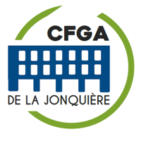
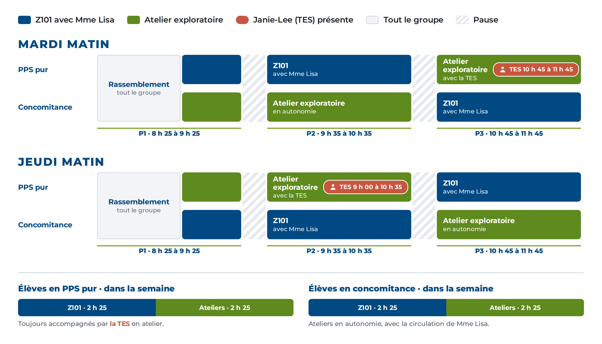
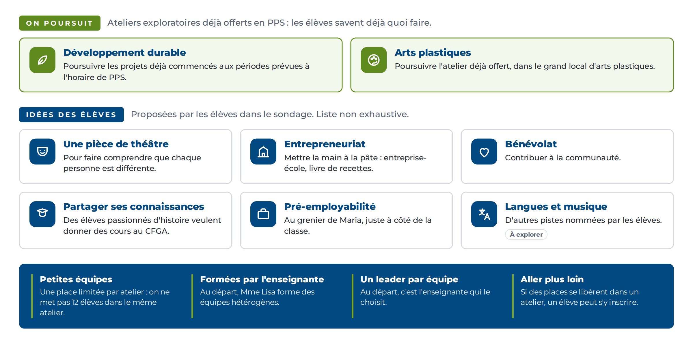
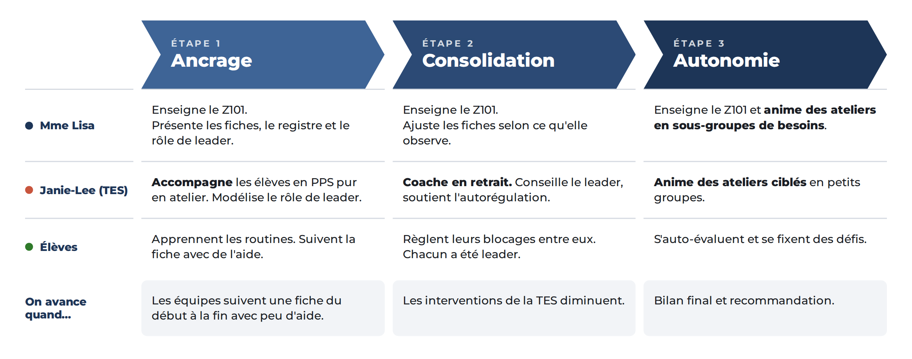
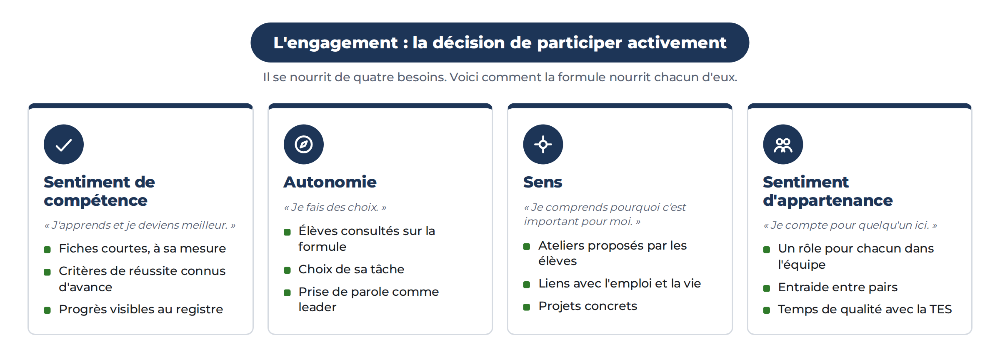

| Élément | Résumé |
|---|---|
| Situation | Groupe Z101 complet (15 élèves). 9 élèves attendent une place en PPS. Ils sont déjà inscrits en matières au centre. |
| Proposition | Deux sous-groupes qui alternent entre le Z101 et des ateliers exploratoires. Le même temps pour tous dans la semaine. |
| Quand | Mardi et jeudi matin, de 8 h 25 à 11 h 45. |
| Qui | Mme Lisa, enseignante du Z101, et Janie-Lee, TES, qui a accepté son rôle. |
| Suivi | Projet pilote en trois étapes, avec un bilan aux directions à la fin de chaque étape. |
| Décision | Ouvrir 9 places supplémentaires au Z101. |
Ces élèves sont motivés maintenant. Attendre retarde leur parcours en PPS.
Chaque élève accueilli peut faire trois ans en PPS au centre.
La formule pourrait servir ailleurs : alpha-pré, francisation, FBC.
| Comment ça fonctionne | |
|---|---|
| Deux sous-groupes | PPS pur (plus de soutien) et concomitance (élèves qui suivent aussi d'autres matières). |
| En alternance | Un sous-groupe est en Z101 avec Mme Lisa pendant que l'autre est en atelier exploratoire. |
| Même temps pour tous | L'horaire du mardi et celui du jeudi sont inversés. |
| Soutien de la TES | Les élèves en PPS pur sont toujours avec Janie-Lee quand ils sont en atelier. |
| Outils d'autonomie | Fiches de tâches, équipes de leaders, registre d'autonomie, règle « 3 avant l'enseignante ». Des boîtes de découverte TEACCH pourraient s'ajouter si le projet souhaité avec l'orthopédagogue se réalise. |
Trois périodes d'une heure (P1, P2, P3) et deux pauses de 10 minutes. L'horaire du mardi et celui du jeudi sont inversés : chaque sous-groupe reçoit le même temps de Z101 et d'ateliers dans la semaine.

| Personne | Rôle |
|---|---|
| Mme Lisa Enseignante | Enseigne le Z101. Circule vers les ateliers pour offrir un soutien ponctuel et rediriger les élèves. |
| Janie-Lee TES | Accompagne les élèves en PPS pur en atelier et pendant les transitions. Mardi : P3, de 10 h 45 à 11 h 45. Jeudi : de 9 h 00 à 10 h 35. |
| Élèves leaders | Lisent la fiche, distribuent les rôles, gèrent le temps, font ranger. |
| Directions | Autorisent le projet et confirment l'accès au local d'arts plastiques. |
Le leader aide son équipe à bien fonctionner. La gestion de classe demeure la responsabilité des adultes.
Rassemble l'équipe, lit la fiche à voix haute, vérifie le matériel.
Donne la parole à chacun, gère le temps, aide à régler les blocages.
Vérifie les critères de réussite, fait ranger, valide au registre.
Estime de soi et autonomie devant des tâches nouvelles.
Écouter, encourager, régler un désaccord.
Organiser, gérer son temps, prendre des responsabilités.
Au départ, l'enseignante forme des équipes hétérogènes et choisit le leader de chaque équipe. Ensuite, chaque élève est leader au moins une fois par étape. Un leader plus réservé peut avoir un co-leader.
Les élèves ont été sondés sur la formule et sur ce qu'ils veulent apprendre. Les ateliers combinent ce qui existe déjà en PPS et leurs propres idées.

On passe à l'étape suivante quand on observe les signes de réussite. Un bilan est présenté aux directions à la fin de chaque étape.


Cadre de référence : affiche « L'engagement » d'Isabelle Pedneault (CC BY-NC-SA 4.0).
| Préoccupation | Réponse |
|---|---|
| Des périodes vides | Aucune : chaque élève est en Z101 ou en atelier guidé par une fiche. |
| L'ajout de personnel | La formule repose sur l'enseignante et la TES qui accompagnent déjà le groupe. |
| Le désengagement de l'an dernier | Il s'explique par des cas très particuliers. Cette année, la cohorte est très participative et la formule est plus structurée. |
| La TES utilisée comme surveillante | Son rôle évolue : elle accompagne, puis coache, puis anime ses propres ateliers. |
| Deux locaux en même temps | Le grenier est à côté de la classe. Mme Lisa circule. Les élèves en PPS pur sont avec la TES. |
| Garder les élèves centrés sur leur tâche | Fiches courtes et visuelles, un rôle pour chacun, critères de réussite, registre. |
| Des résultats moins bons que prévu | Le bilan de l'étape 1 permet d'ajuster la formule rapidement. |
| Indicateur | Cible | Outil |
|---|---|---|
| Rétention | 100 % des 24 élèves | Présences |
| Présence | Stable ou en hausse | Présences |
| Tâches faites en autonomie | En hausse | Registre d'autonomie |
| Interventions de la TES | En baisse | Grille d'observation |
| Poursuite en PPS | Inscription en année 2 | Inscriptions |
Indicateurs suivis chaque semaine et présentés au bilan de fin d'étape.
| Quand | Quoi | Qui |
|---|---|---|
| Semaine 0 | Inscription des 9 élèves et accès au local. | Directions |
| Semaine 0 | Formation des sous-groupes, premières fiches et registre. | Mme Lisa, Janie-Lee |
| Semaine 1 | Début de l'étape 1. | Mme Lisa, Janie-Lee |
| Fin de chaque étape | Bilan aux directions. | Mme Lisa, Janie-Lee |